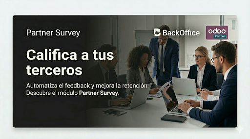
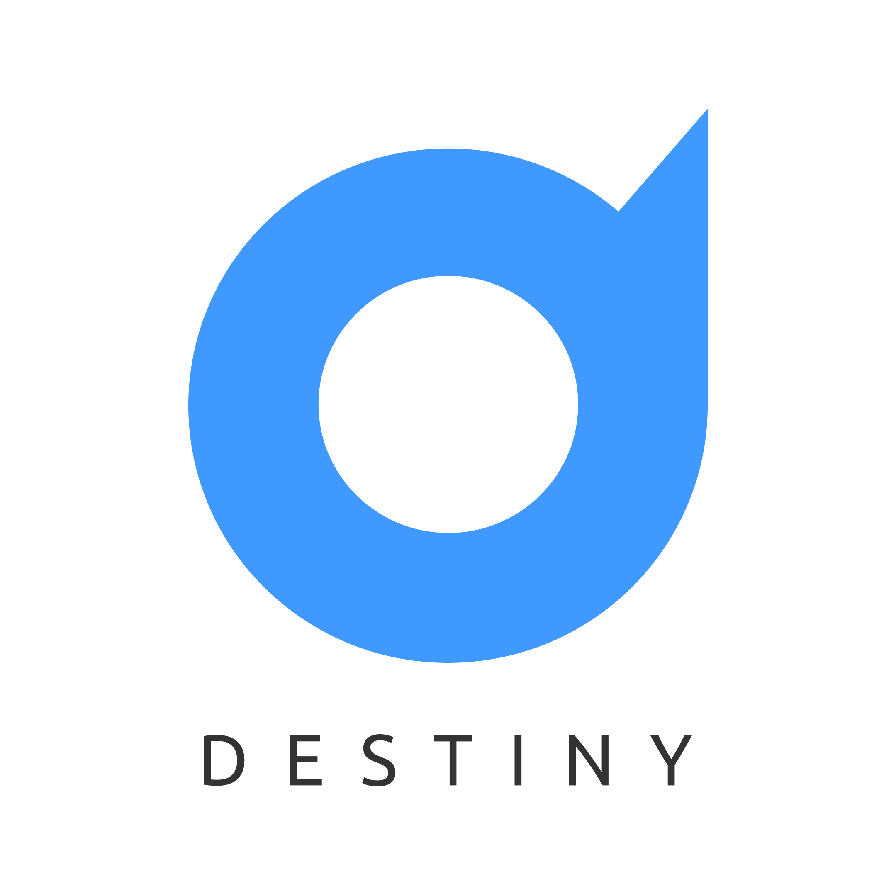
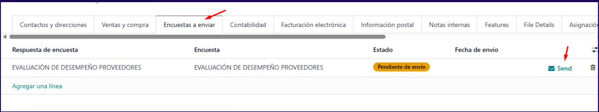
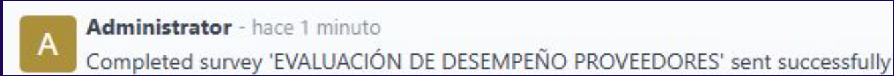
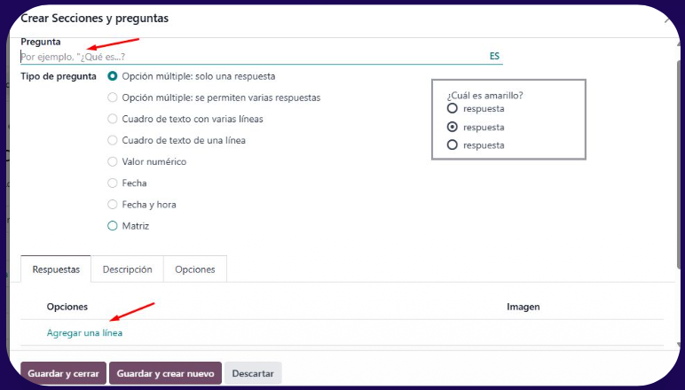
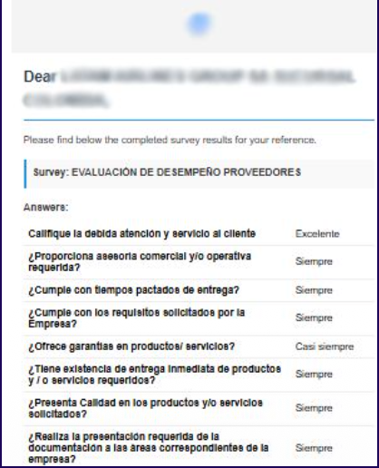

Gestione envíos de encuestas ya completadas hacia sus contactos: líneas por contacto con estado Pendiente de enviar / Enviado, botón de envío por correo y flujo desde la ficha de encuesta (Generate Survey) alineado con el manual de usuario.
Pestaña Surveys to Send, contador en el smart button y líneas editables con respuesta de encuesta completada.
Cada survey.user_input solo se asigna a un contacto. No se eliminan líneas ya enviadas. Envío solo si la respuesta está en Hecho.
En el formulario de encuesta, genere un intento real para un contacto y abra el enlace público de la encuesta (mismo espíritu que el manual).

1. Contacto — pestaña Surveys to Send y columnas de estado.

2. Envío por correo cuando la encuesta está completada y el contacto tiene email.

3. Formulario de encuesta — botón Generate Survey y asistente.

4. Vista lista global Surveys to Send (pendiente / enviado).
Los módulos BackOffice tienen un costo asociado por suscripción. El alcance, condiciones comerciales y el catálogo actualizado de soluciones se publican en el sitio oficial.
Consulte precios, planes y cómo identificar cada módulo en boffice.cloud.
des_survey_reminder — recordatorios / base de encuestas del paquete.bo_license_client — validación de licencia BackOffice en operaciones críticas.des_partner_survey_send en el addons_path de la instancia de cada empresa (o del entorno donde vaya a desplegar).addons_path todos los módulos de los que depende este addon
(des_survey_reminder, bo_license_client) y, a su vez, las dependencias de esos módulos si las hubiera en su cadena, para que Odoo pueda resolverlas al actualizar la lista de aplicaciones e instalar.
Manuales/Manual de usuario - Odoo - Encuesta proveedores..pdf para el detalle operativo.Web: boffice.cloud